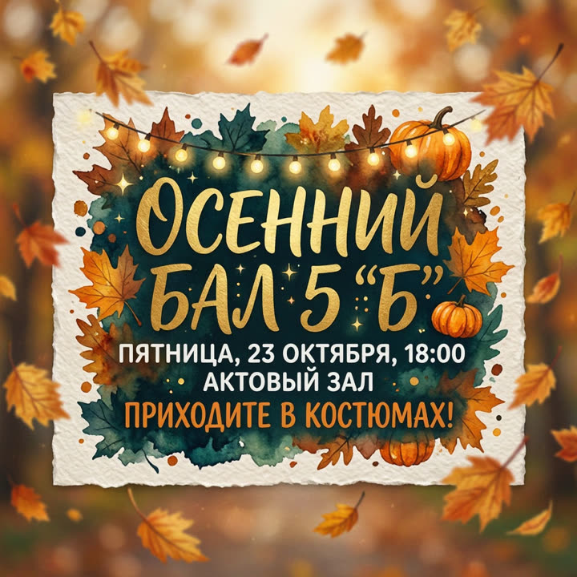
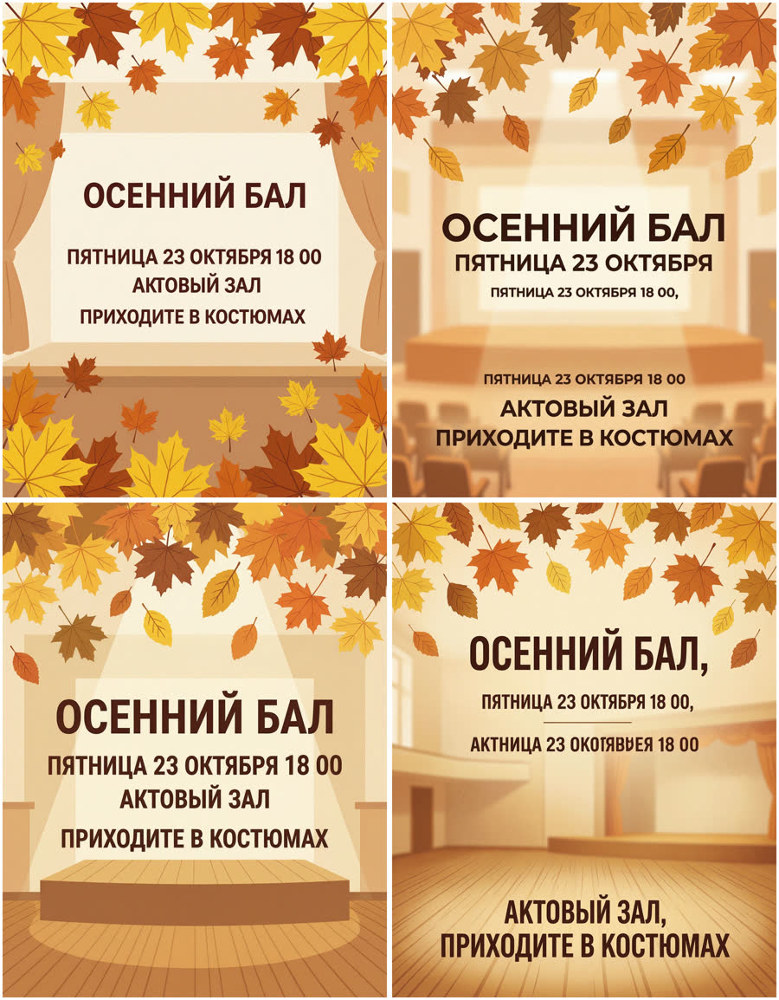
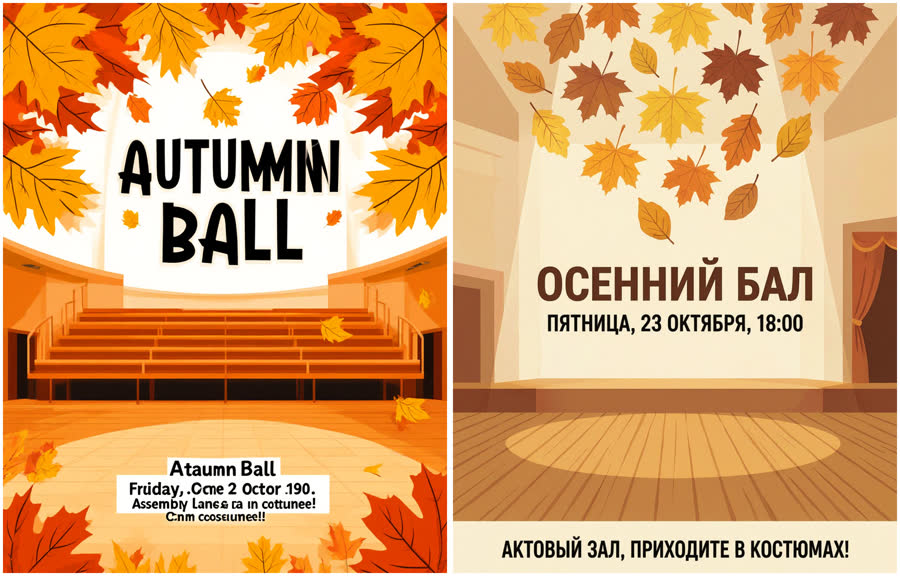
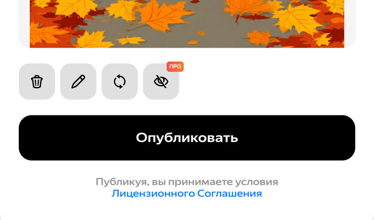

Бесплатные уроки · Алиса и Шедеврум
Нарисуешь афишу, прочитаешь её по буквам и узнаешь, куда попадёт картинка и что с ней можно делать.
Афиша для чата класса, открытка соседям, картинка к посту — нейросети Яндекса рисуют такое за полминуты. Рисовать можно в двух местах: в чате Алисы и в Шедевруме. Буквы они пишут по-разному, а главное — у картинок разная судьба: одна остаётся у тебя, другая уходит в общую ленту. Учимся получать афишу без ошибок и выбирать, где её рисовать.
Войди на alice.yandex.ru с Яндекс ID — без входа Алиса не рисует. Напиши всё, что должно быть на афише: что, для кого, день недели и дату, время, место и одну фразу-приглашение. Слово «Нарисуй» Алиса понимает сама — над полем ввода появятся кнопки формата и вариантов.
Нарисуй афишу [осеннего бала] для чата [нашего 5 «Б»]: [пятница, 23 октября, в 18:00, в актовом зале]. [Приходите в костюмах!]

Мы прочитали афишу по буквам: всё верно, вплоть до двоеточия в «18:00». Так бывает. Но это не правило: каждая новая картинка — новая попытка, и буквы в ней рисуются заново.
Потом мы попросили то же самое вертикально и сразу четыре варианта — дописали «Формат 3:4, несколько вариантов». Каждую строку текста дали в кавычках, как советует справка Алисы.

Две афиши годятся. На второй (справа вверху) дата повторена три раза. На четвёртой — «АКТНИЦА 23 ОКОТЯВРЕЯ». И ни на одной нет двоеточия и «!»: «18 00». У нас так было на всех девяти вертикальных картинках, а на квадратных двоеточие осталось. Если время важно — оставь квадрат или проверь цифры дважды.
Шедеврум — второе место, где рисует Яндекс: shedevrum.ai, вход тем же Яндекс ID, бесплатно с дневным лимитом (у нас было 60 картинок). Мы вставили подробный запрос, а формат выбрали кнопкой «3:4».
Афиша для чата класса. [Осень: жёлтые листья, школьный актовый зал], простая плоская иллюстрация. Текст на афише — только эти три строки, слово в слово: крупно «[ОСЕННИЙ БАЛ]», ниже «[Пятница, 23 октября, 18:00]», ещё ниже «[Актовый зал. Приходите в костюмах!]». Других слов не нужно.

Модель, которая стоит по умолчанию (v.2.5), перевела надпись на английский и исказила её: «AUTUMMNI BALL», «Friday, .Ocne 2 Octor 190.». Так и написано в справке Шедеврума: русский текст она заменяет английским переводом. Модель v.2.1 из того же списка написала всё верно и со знаками — только точку после «зал» заменила запятой.
Но кнопки «Скачать» под картинкой в Шедевруме нет:

По справке Шедеврума картинку можно сохранить только после публикации. А публикация отправляет её в твой профиль и в ленту других людей — вместе с текстом запроса. Поэтому в запросе не пиши адрес, имена и телефон. Скачать без публикации и скрыть запрос можно с подпиской «Про»: первые 7 дней бесплатно, потом 100 ₽ в месяц при Яндекс Плюсе.
Афиша для класса или соседей — личное некоммерческое дело: так можно и в чате Алисы, и в Шедевруме. Для картинки из Шедеврума справка просит ссылку на пост или пометку «сделано в Шедевруме».
С рекламой своего дела иначе. По условиям чата Алисы без «Алисы Плюс» картинки — только для личных некоммерческих целей. По условиям Шедеврума коммерческое использование — только по согласованию с Яндексом или с подпиской «Про», а публиковать в его ленте рекламу своих товаров и услуг нельзя. Объявление для Авито или обложку для своего магазина без подписки здесь не делай.
Нарисуй афишу для класса, соседей или друзей: событие, день недели и дата, время, место. Прочитай её по буквам. Реши, где рисовать: в чате Алисы или в Шедевруме.
Урок рассчитан на сайты alice.yandex.ru и shedevrum.ai; Шедеврум — для тех, кому есть 18. Мы проверяли со входом Яндекс ID, у аккаунта была опция «Алиса Плюс» — поэтому на наших картинках нет водяного знака. Названия кнопок и список моделей могут меняться. Подписка на наше обучение не включает платные тарифы нейросетей.
Алиса AI и Шедеврум — запросы урока проверены 5 октября 2026 со входом Яндекс ID; в Шедевруме ничего не публиковали. Правила сверены в тот же день: справка Шедеврума, условия Шедеврума, условия чата Алисы и справка Алисы о картинках.
Дальше в курсе ещё 5 уроков, первый — «Свежие факты: ссылка и дата». Они открываются в приложении в Telegram: там же отметки прочитанного, серия и практика.
Открыть следующий урок в TelegramКак войти и что ещё умеет Алиса и Шедеврум — разбор на сайте. Все нейросети, которые открываются из России, — на одной странице.